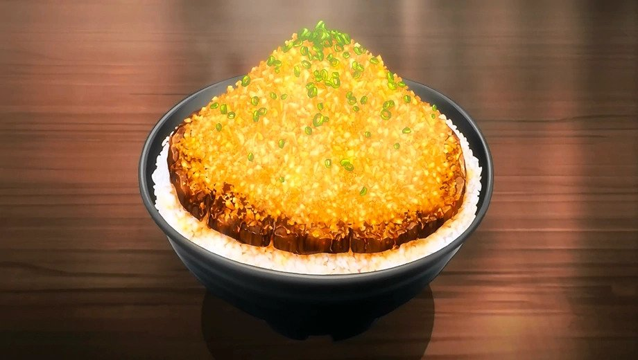

Chaliapin Steak Don

Description
Chaliapin Steak is a tender tasting steak invented in Japan. Although it is not new, curiosity about the dish has increased recently because of the Japanese anime Food Wars! : Shokugeki No Soma.
Ingredients
- Beef Sirloin
- Lots of Onion
- Garlic
- Pepper
- Salt
- Potato Starch
- Rice (donburi bowl)
- Umeboshi Paste
- Pickled Plum
Red Wine
Soy Sauce
Butter
How to Cook:
- Chop the Onions finely.
- Remove the tendons from the beef and beat it with a meat tenderizer until as flat as possible.
- Cover meat on both sides with the chopped onion and leave for 30 minutes or more. Remove the onion and add salt and pepper.
- Cook the steagik to your preference(most would prefer medium-rare). Remove from heat and melt 1 tablespoon of butter in a frying pan and fry the onion used for the beef until it changes color. Adjust the flavor with salt and pepper, then move the onion to the steak.
- Melt the remaining butter in the frying pan and fry the sides of the meat before taking it out.
Making the Sauce:
- Add red wine to the frying pan used for the beef to deglaze it. Boil down the wine while scraping off the meat juice.
- Add soy sauce and mix with everything. Adjust seasonings to personal preferences.
- Thicken with dissolved potato starch.
How to Serve
Put rice mixed with Umeboshi paste (pickled plum) in the donburi bowl. Place the beef on top and add plenty of sauce. Top with the finely chopped, cooked onions.
Take me Back!